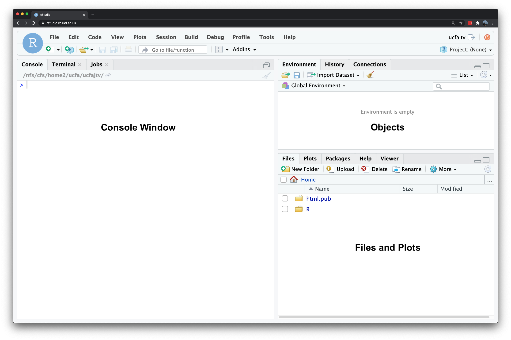
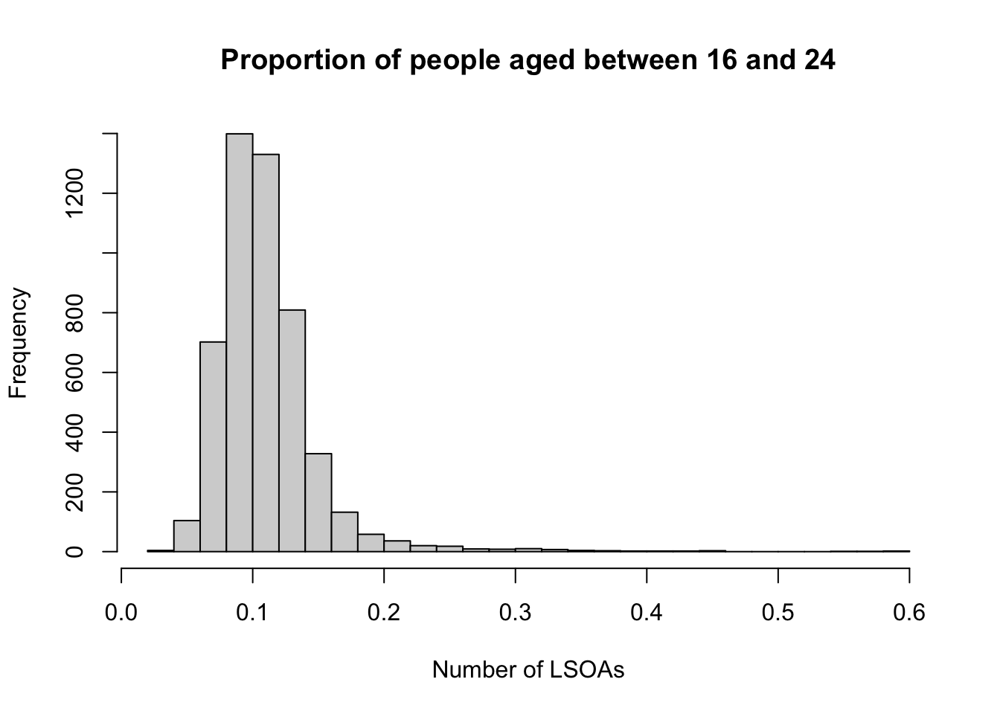
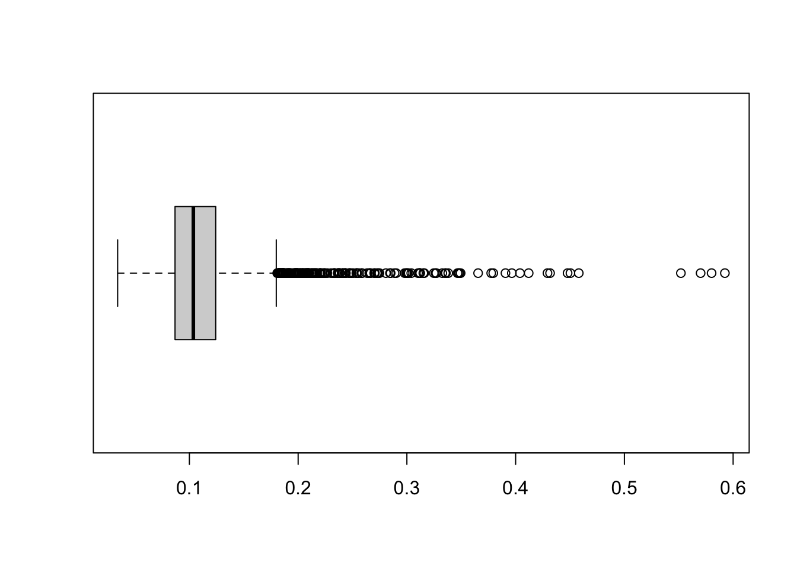

1 R for Data Analysis
This week, we will start easy with a refresher on how to use R and RStudio for working with quantitative data. We will revisit some key concepts introduced in Geography in the Field I and Geography in the Field II, but from next week we will build on these foundations by introducing more advanced statistical techniques.
1.1 Lecture slides
You can download the slides of this week’s lecture here: [Link].
1.2 Reading list
Essential readings
Suggested readings
1.3 Installation of R
R is a programming language originally designed for conducting statistical analysis and creating graphics. The major advantage of using R is that it can be used on any computer operating system, and is free for anyone to use and contribute to. Because of this, it has rapidly become the statistical language of choice for many academics and has a large user community with people constantly contributing new packages to carry out all manner of statistical, graphical, and geographical tasks.
Installing R takes a few relatively simple steps involving two pieces of software. First there is the R programming language itself. Follow these steps to get it installed on your computer:
- Navigate in your browser to the download page: [Link]
- If you use a Windows computer, click on Download R for Windows. Then click on base. Download and install R 4.4.x for Windows. If you use a Mac computer, click on Download R for macOS and download and install R-4.4.x.arm64.pkg for Apple silicon Macs or R-4.4.x.x86_64.pkg for older Intel-based Macs.
That is it! You now have successfully installed R onto your computer. To make working with the R language a little bit easier we also need to install something called an Integrated Development Environment (IDE). We will use RStudio Desktop:
- Navigate to the official webpage of RStudio: [Link]
- Download and install RStudio on your computer.
In case you do not have access to a laptop or encounter issues with the installation process, RStudio is also available through Desktop@UCL Anywhere as well as that it can be accessed on UCL computers across campus.
After this, start RStudio to see if the installation was successful. Your screen should look something like what is shown in Figure 1.
The main panes that we will be using are:
| Window | Purpose |
|---|---|
| Console | Where we write one-off code such as installing packages. |
| Files | Where we can see where our files are stored on our computer system. |
| Environment | Where our variables or objects are kept in memory. |
| Plots | Where the outputs of our graphs, charts and maps are shown. |
1.4 Customisation of R
Now we have installed R and RStudio, we need to customise R. Many useful R functions come in packages, these are free libraries of code written and made available by other R users. This includes packages specifically developed for data cleaning, data wrangling, visualisation, mapping, and spatial analysis. To save us some time later on, we will install the R packages that we will need during the module in one go.
Start RStudio, and copy and paste the following code into the console window. You can execute the code by pressing the Return button on your keyboard. Depending on your computer’s specifications and the internet connection, this may take a short while.
R code
# install packages
install.packages(c("tidyverse", "janitor", "easystats"))R libraries installed through CRAN are typically pre-compiled, meaning that these packages can be easily installed on your machine without additional steps. However, when attempting to install an R library that requires compilation, additional software must be installed. For Windows users, RTools provides the necessary tools for building R packages from source. MacOS users should install Xcode as well as the GNU Fortran compiler.
Once you have installed the packages, we need to check whether we can in fact load them into R. Copy and paste the following code into the console, and execute by pressing Return on your keyboard.
R code
# load packages
library(tidyverse)
library(janitor)
library(easystats)You will see some information printed to your console but as long as you do not get any of the messages below, the installation was successful. If you do get any of the messages below it means that the package was not properly installed, so try to install the package in question again.
Error: package or namespace load failed for <packagename>Error: package '<packagename>' could not be loadedError in library(<packagename>) : there is no package called '<packagename>'
Many packages require additional software components, known as dependencies, to function properly. Occasionally, when you install a package, some of these dependencies are not installed automatically. When you then try to load a package, you might encounter error messages that relate to a package that you did not explicitly loaded or installed. If this is the case, it is likely due to a missing dependency. To resolve this, identify the missing dependency and install it using the command install.packages('<dependencyname>'). Afterwards, try loading your packages again.
1.5 Getting started with R
Unlike traditional statistical analysis software like Microsoft Excel or IBM SPSS Statistics, which often rely on point-and-click interfaces, R requires users to input commands to perform tasks such as loading datasets and fitting models. This command-based approach is typically done by writing scripts, which not only document your workflow but also allow for easy repetition of tasks.
Let us begin by exploring some of R’s built-in functionality through a simple exercise: creating a few variables and performing basic mathematical operations.
In your RStudio console, you will notice a prompt sign > on the left-hand side. This is where you can directly interact with R. If any text appears in red, it indicates an error or warning. When you see the >, it means R is ready for your next command. However, if you see a +, it means you have not completed the previous line of code. This typically happens when brackets are left open or a command is not properly finished in the way R expected.
At its core, every programming language can be used as a powerful calculator. Type in 10 * 12 into the console and execute.
R code
# multiplication
10 * 12[1] 120Once you press return, you should see the answer of 120 returned below.
1.5.1 Storing variables
Instead of using raw numbers or standalone values, it is more effective to store these values in variables, which allows for easy reference later. In R, this process is known as creating an object, and the object is stored as a variable. To assign a value to a variable, use the <- syntax. Let us create two variables to experiment with this
Type in ten <- 10 into the console and execute.
R code
# store a variable
ten <- 10You will see nothing is returned to the console. However, if you check your environment window, you will see that a new variable has appeared, containing the value you assigned.
Type in twelve <- 12 into the console and execute.
R code
# store a variable
twelve <- 12Again, nothing will be returned to the console, but be sure to check your environment window for the newly created variable. We have now stored two numbers in our environment and assigned them variable names for easy reference. R stores these objects as variables in your computer’s RAM memory, allowing for quick processing. Keep in mind that without saving your environment, these variables will be lost when you close R and you would need to run your code again.
Now that we have our variables, let us proceed with a simple multiplication. Type in ten * twelve into the console and execute.
R code
# using variables
ten * twelve[1] 120You should see the output in the console of 120. While this calculation may seem trivial, it demonstrates a powerful concept: these variables can be treated just like the values they contain.
Next, type in ten * twelve * 8 into the console and execute.
R code
# using variables and values
ten * twelve * 8[1] 960You should get an answer of 960. As you can see, we can mix variables with raw values without any problems. We can also store the output of variable calculations as a new variable.
Type output <- ten * twelve * 8 into the console and execute.
R code
# store output
output <- ten * twelve * 8Because we are storing the output of our calculation to a new variable, the answer is not returned to the screen but is kept in memory.
1.5.2 Accessing variables
We can ask R to return the value of the output variable by simply typing its name into the console. You should see that it returns the same value as the earlier calculation.
R code
# return value
output[1] 9601.5.3 Text variables
We can also store variables of different data types, not just numbers but text as well.
Type in str_variable <- "Hello GEOG0018" into the console and execute.
R code
# store a variable
str_variable <- "Hello GEOG0018"We have just stored our sentence made from a combination of characters. A variable that stores text is known as a string or character variable. These variables are always denoted by the use of single ('') or double ("") quotation marks.
Type in str_variable into the console and execute.
R code
# return variable
str_variable[1] "Hello GEOG0018"You should see our entire sentence returned, enclosed in quotation marks ("").
1.5.4 Calling functions
We can call functions on our variable. For example, we can ask R to print our variable, which will give us the same output as accessing it directly via the console.
Type in print(str_variable) into the console and execute.
R code
# printing a variable
print(str_variable)[1] "Hello GEOG0018"You can type ?print into the console to learn more about the print() function. This method works with any function, giving you access to its documentation. Understanding this documentation is crucial for using the function correctly and interpreting its output.
R code
# open documentation of the print function
?printIn many cases, a function will take more than one argument or parameter, so it is important to know what you need to provide the function with in order for it to work. For now, we are using functions that only need one required argument although most functions will also have several optional or default parameters.
1.5.5 Inspecting variables
Within the base R language, there are various functions that have been written to help us examine and find out information about our variables. For example, we can use the typeof() function to check what data type our variable is.
Type in typeof(str_variable) into the console and execute.
R code
# call the typeof() function
typeof(str_variable)[1] "character"You should see the answer: character. As evident, our str_variable is a character data type. We can try testing this out on one of our earlier variables too.
Type in typeof(ten) into the console and execute.
R code
# call the typeof() function
typeof(ten)[1] "double"You should see the answer: double. Alternatively, we can check the class of a variable by using the class() function.
Type in class(str_variable) into the console and execute.
R code
# call the class() function
class(str_variable)[1] "character"In this case, you will see the same result as before because, in R, both the class and type of a string are character. Other programming languages might use the term string instead, but it essentially means the same thing.
Type in class(ten) into the console and execute.
R code
# call the class() function
class(ten)[1] "numeric"In this case, you will get a different result because the class of this variable is numeric. Numeric objects in R can be either doubles (decimals) or integers (whole numbers). You can test whether the ten variable is an integer by using specific functions designed for this purpose.
Type in is.integer(ten) into the console and execute.
R code
# call the integer() function
is.integer(ten)[1] FALSEYou should see the result FALSE. As we know from the typeof() function, the ten variable is stored as a double, so it cannot be an integer.
Whilst knowing how to distinguish between different data types might not seem important now, the difference betwee a double and an integer can quite easily lead to unexpected errors.
We can also check the length of our a variable.
Type in length(str_variable) into the console and execute.
R code
# call the length() function
length(str_variable)[1] 1You should get the answer 1 because we only have one set of characters. We can also determine the length of each set of characters, which tells us the length of the string contained in the variable.
Type in nchar(str_variable) into the console and execute.
R code
# call the nchar() function
nchar(str_variable)[1] 14You should get an answer of 14.
1.5.6 Creating multi-value objects
Variables are not constricted to one value, but can be combined to create larger objects. Type in two_str_variable <- c("This is our second variable", "It has two parts to it") into the console and execute.
R code
# store a new variable
two_str_variable <- c("This is our second string variable", "It has two parts to it")In this code, we have created a new variable using the c() function, which combines values into a vector or list. We provided the c() function with two sets of strings, separated by a comma and enclosed within the function’s parentheses.
Let us now try both our length() and nchar() on our new variable and see what the results are:
R code
# call the length() function
length(two_str_variable)[1] 2# call the nchar() function
nchar(two_str_variable)[1] 34 22You should notice that the length() function now returned a 2 and the nchar() function returned two values: 34 and 22.
You may have noticed that each line of code in the examples includes a comment explaining its purpose. In R, comments are created using the hash symbol #. This symbol instructs R to ignore the commented line when executing the code. Comments are useful for understanding your code when you revisit it later or when sharing it with others.
Extending the concept of multi-value objects to two dimensions results in a dataframe. A dataframe is the de facto data structure for most tabular data. We will use functions from the tidyverse library, a suite of packages to load tabular data and conduct data analysis.
Within the tidyverse, dataframes are referred to as tibbles. Some of the most important and useful functions come from the tidyr and dplyr packages, including:
| Package | Function | Use to |
|---|---|---|
dplyr |
select() |
select columns |
dplyr |
filter() |
select rows |
dplyr |
mutate() |
create, transform, or recode variables |
dplyr |
summarise() |
summarise data |
dplyr |
group_by() |
group data into subgroups for further processing |
tidyr |
pivot_longer() |
convert data from wide format to long format |
tidyr |
pivot_wider() |
convert long format dataset to wide format |
For more information on the tidyverse you can refer to www.tidyverse.org.
1.6 Age groups in Camden
In RStudio, scripts allow us to build and save code that can be run repeatedly. We can organise these scripts into RStudio projects, which consolidate all files related to an analysis such as input data, R scripts, results, figures, and more. This organisation helps keep track of all data, input, and output, while enabling us to create standalone scripts for each part of our analysis. Additionally, it simplifies managing directories and filepaths.
Navigate to File -> New Project -> New Directory, and create a folder with the name GEOG0018. Click on Create Project. You should now see your main RStudio window switch to this new project and when you check your files pane, you should see a new R Project called GEOG0018.
Please ensure that folder names and file names do not contain spaces or special characters such as * . " / \ [ ] : ; | = , < ? > & $ # ! ' { } ( ). Different operating systems and programming languages deal differently with spaces and special characters and as such including these in your folder names and file names can cause many problems and unexpected errors. As an alternative to using white space you can use an underscore (_) or hyphen (-) if you like.
With the basics covered, let us dive into loading a real dataset, perform some data cleaning, and conducting some exploratory data analysis on the distribution of age groups in Camden. The data covers all usual residents across London, as recorded in the 2021 Census for England and Wales, aggregated at the Lower Super Output Area (LSOA) level.
An LSOA is a geographic unit used in the UK for statistical analysis. It typically represents small areas with populations of around 1,000 to 3,000 people and is designed to ensure consistent data reporting. LSOAs are commonly used to report on census data, deprivation indices, and other socio-economic statistics.
The dataset has been extracted using the Custom Dataset Tool, and you can download the file via the link provided below. Save the files in your project folder under data.
You will have to create a folder named data inside your R Project.
| File | Type | Link |
|---|---|---|
| London LSOA Census 2021 Age Groups | csv |
Download |
To download a csv file that is hosted on GitHub, click on the Download raw file button on the top right of your screen and it should download directly to your computer.
To get started, let us create our first script. File -> New File -> R Script. Save your script as w06-age-group-analysis.r.
We will start by loading the libraries that we will need:
R code
# load libraries
library(tidyverse)
library(janitor)In RStudio, there are two primary ways to run a script: all at once or by executing individual lines or chunks of code. As a beginner, it is often beneficial to use the line-by-line approach, as it allows you to test your code interactively and catch errors early.
To run line-by-line:
- By clicking: Highlight the line or chunk of code you want to run, then go to Code and select Run selected lines.
- By key commands: Highlight the code, then press
Ctl(orCmdon Mac) +Return.
To run the whole script:
- By clicking: In the scripting window, click Run in the top-right corner and choose Run All.
- By key commands: Press
Option+Ctrl(orCmd) +R.
If a script gets stuck or you realise there is an error in your code, you may need to interrupt R. To do this, go to Session -> Interrupt R. If the interruption does not work, you might need to terminate and restart R.
1.6.1 Data loading
Next, we can load the London-LSOA-AgeGroup.csv file into R.
R code
# load age data
lsoa_age <- read_csv("data/London-LSOA-AgeGroup.csv")Rows: 24970 Columns: 5
── Column specification ────────────────────────────────────────────────────────
Delimiter: ","
chr (3): Lower layer Super Output Areas Code, Lower layer Super Output Areas...
dbl (2): Age (5 categories) Code, Observation
ℹ Use `spec()` to retrieve the full column specification for this data.
ℹ Specify the column types or set `show_col_types = FALSE` to quiet this message.If using a Windows machine, you may need to substitute your forward-slashes (/) with two backslashes (\\) whenever you are dealing with file paths.
Let us have a look at the dataframe:
R code
# inspect number of columns
ncol(lsoa_age)[1] 5# inspect number of rows
nrow(lsoa_age)[1] 24970# inspect data
head(lsoa_age)# A tibble: 6 × 5
Lower layer Super Output Areas…¹ Lower layer Super Ou…² Age (5 categories) C…³
<chr> <chr> <dbl>
1 E01000001 City of London 001A 1
2 E01000001 City of London 001A 2
3 E01000001 City of London 001A 3
4 E01000001 City of London 001A 4
5 E01000001 City of London 001A 5
6 E01000002 City of London 001B 1
# ℹ abbreviated names: ¹`Lower layer Super Output Areas Code`,
# ²`Lower layer Super Output Areas`, ³`Age (5 categories) Code`
# ℹ 2 more variables: `Age (5 categories)` <chr>, Observation <dbl># inspect column names
names(lsoa_age)[1] "Lower layer Super Output Areas Code" "Lower layer Super Output Areas"
[3] "Age (5 categories) Code" "Age (5 categories)"
[5] "Observation" You can further inspect the dataset using the View() function.
To access specific columns or rows in a dataframe, we can use indexing. Indexing refers to the numbering assigned to each element within a data structure, allowing us to precisely select and manipulate data.
To access the first row of a dataframe, you would use dataframe[1, ], and to access the first column, you would use dataframe[, 1]. The comma separates the row and column indices, with the absence of a number indicating all rows or columns.
In R, indexing begins at 1, meaning that the first element of any data structure is accessed with the index [1]. This is different from many other programming languages, such as Python or Java, where indexing typically starts at 0.
R code
# index columns
lsoa_age[, 1]# A tibble: 24,970 × 1
`Lower layer Super Output Areas Code`
<chr>
1 E01000001
2 E01000001
3 E01000001
4 E01000001
5 E01000001
6 E01000002
7 E01000002
8 E01000002
9 E01000002
10 E01000002
# ℹ 24,960 more rows# index rows
lsoa_age[1, ]# A tibble: 1 × 5
Lower layer Super Output Areas…¹ Lower layer Super Ou…² Age (5 categories) C…³
<chr> <chr> <dbl>
1 E01000001 City of London 001A 1
# ℹ abbreviated names: ¹`Lower layer Super Output Areas Code`,
# ²`Lower layer Super Output Areas`, ³`Age (5 categories) Code`
# ℹ 2 more variables: `Age (5 categories)` <chr>, Observation <dbl># index cell
lsoa_age[1, 1]# A tibble: 1 × 1
`Lower layer Super Output Areas Code`
<chr>
1 E01000001 Alternatively, you can access the data within individual columns by referring to their names using the $ operator. This allows you to easily extract and work with a specific column without needing to know its position in the dataframe. For example, if your dataframe is named dataframe and you want to access a column named age, you would use dataframe$age. This method is especially useful when your data has many columns or when the column positions may change.
1.6.2 Data manipulation
Because all the data are stored in long format, we need to transform the data to a wide format. This means that instead of having multiple rows for an LSOA showing counts for different age groups, all the information for each LSOA will be consolidated into a single row. We will further clean up the column names with the janitor package to make them easier to work with.
We can do this as follows:
R code
# clean names
lsoa_age <- lsoa_age |>
clean_names()
# pivot wider
lsoa_age <- lsoa_age |>
pivot_wider(id_cols = c("lower_layer_super_output_areas_code", "lower_layer_super_output_areas"),
names_from = "age_5_categories", values_from = "observation")
# clean names
lsoa_age <- lsoa_age |>
clean_names()The code above uses a pipe function: |>. The pipe operator allows you to pass the output of one function directly into the next, streamlining your code. While it might be a bit confusing at first, you will find that it makes your code faster to write and easier to read. More importantly, it reduces the need to create multiple intermediate variables to store outputs.
You can further inspect the results using the View() function.
A common issue with data tied to spatial units, such as Lower Super Output Areas (LSOAs), often vary in size, meaning some areas will have more residents than others. This variation makes it challenging to compare absolute counts fairly across different areas. To address this, we can first sum the counts across all age groups to get the total number of residents in each LSOA, and then calculate the proportion of people within each age group by dividing the counts by the total number of people in each LSOA.
R code
# calculate total population
lsoa_age <- lsoa_age |>
rowwise() |>
mutate(lsoa_pop = sum(across(3:7)))
# calculate proportions
lsoa_age <- lsoa_age |>
mutate(across(3:7, ~./lsoa_pop))You can further inspect the results using the View() function.
1.6.3 Data exploration
Now that we have loaded and inspected our data, we can start by analysing its distribution. We will begin by examining the proportion of people aged 16 to 24 across London, using basic descriptive statistics such as the mean, median, and range. These measures will give us an idea of the central tendency and spread of the data.
R code
# mean
mean(lsoa_age$aged_16_to_24_years)[1] 0.1101321# median
median(lsoa_age$aged_16_to_24_years)[1] 0.1036368# range
range(lsoa_age$aged_16_to_24_years)[1] 0.03403141 0.59242902# summary
summary(lsoa_age$aged_16_to_24_years) Min. 1st Qu. Median Mean 3rd Qu. Max.
0.03403 0.08679 0.10364 0.11013 0.12420 0.59243 Further to these standard descriptive statistics, graphs provide a useful visual summary of the distribution of values on a variable. Graphs can help us assess, for instance, whether it our data are normally distributed, whether there are outlying values, and whether there are any missing values or errors we should deal with before running our analyses. Histograms are a good first step when it comes to looking at the distribution of values of a variable.
We can create a histogram as follows:
R code
# histogram
hist(lsoa_age$aged_16_to_24_years, breaks = 30, xlab = "Number of LSOAs", main = "Proportion of people aged between 16 and 24")
A histogram is particularly useful for checking whether a variable is normally distributed because it visually displays the frequency of data points across different intervals. In a normal distribution, the histogram will show a symmetric bell-shaped curve, with most data points clustering around the mean and fewer points in the tails.
Boxplots provide another method for examining the distribution of values in a continuous variable. The box itself represents the interquartile range (IQR), bounded by the lower quartile (Q1) and upper quartile (Q3), with the median displayed as a line inside the box. The whiskers extend 1.5 times the IQR above Q3 and below Q1, indicating the range within which most of the data lies, while any points outside this range are plotted as outliers.
A boxplot can be created as follows:
R code
# boxplot
boxplot(lsoa_age$aged_16_to_24_years, horizontal = TRUE)
1.6.4 Data filtering
So far we have only looked at the dataset for London as a whole. So, let us zoom in to Camden by filtering our dataset:
R code
# filter out camden
lsoa_age_camden <- lsoa_age |>
filter(str_detect(lower_layer_super_output_areas, "Camden"))
# inspect
head(lsoa_age_camden)# A tibble: 6 × 8
# Rowwise:
lower_layer_super_output_areas…¹ lower_layer_super_ou…² aged_15_years_and_un…³
<chr> <chr> <dbl>
1 E01000842 Camden 011A 0.147
2 E01000843 Camden 014A 0.129
3 E01000844 Camden 011B 0.191
4 E01000845 Camden 014B 0.177
5 E01000846 Camden 014C 0.209
6 E01000847 Camden 014D 0.191
# ℹ abbreviated names: ¹lower_layer_super_output_areas_code,
# ²lower_layer_super_output_areas, ³aged_15_years_and_under
# ℹ 5 more variables: aged_16_to_24_years <dbl>, aged_25_to_34_years <dbl>,
# aged_35_to_49_years <dbl>, aged_50_years_and_over <dbl>, lsoa_pop <dbl>The str_detect() function searches for a substring within a larger string and returns a logical value indicating whether the searched text is present. In turn, te filter() function uses this to subset the dataset.
You can further inspect the results using the View() function.
We can save this dataset so that we can easily load it the next time we want to work with this by writing it to a csv file.
R code
# write data
write_csv(x = lsoa_age_camden, file = "data/Camden-LSOA-AgeGroup.csv")1.7 Homework task
This concludes this week’s tutorial. Now complete the following homework tasks:
- Filter the London LSOAs to any of the London boroughs other than Camden.
- For your selected borough, create either a histogram or a boxplot visualising the distribution of the proportion of people aged 25 to 34 years. Make sure to give your plot a clear title and label the axes appropriately.
- Save your visualisation as an image.
Paste your visualisation output in the appendix of your assignment, include a few sentences interpreting the results.
1.8 Before you leave
This week, we revisited the basics of conducting quantitative analysis in R and RStudio, building on the material introduced last year in Geography in the Field I and Geography in the Field II. Now that everyone is back up to speed, next week we will move on to using R for statistical analysis. But for now, it is time to kick back and relax!